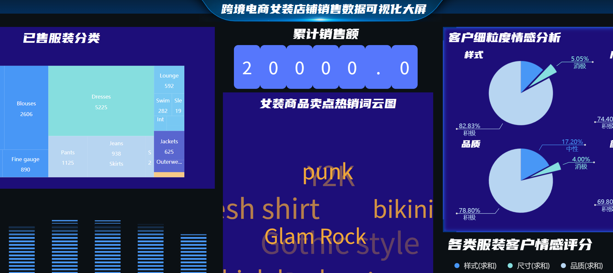
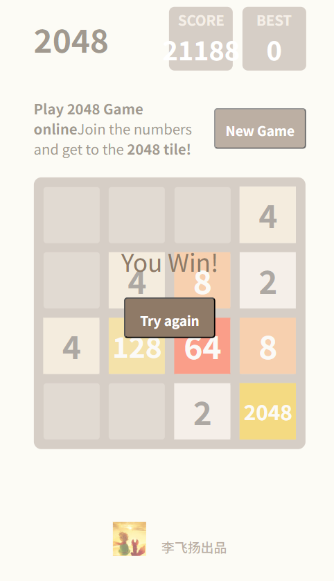
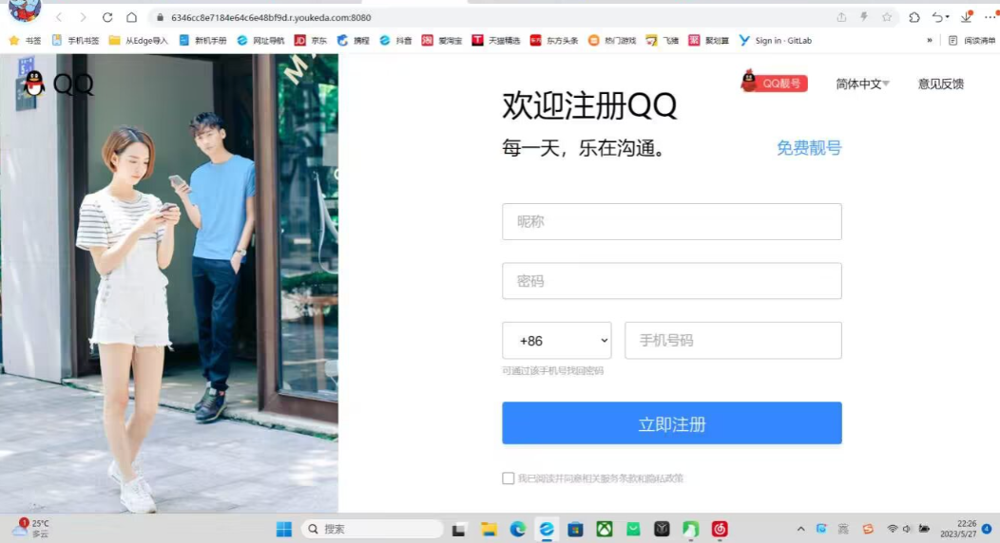

把我的经历映射到产品经理的完整工作流——每张卡片都是「流程环节 + 我已具备的真实证据」。
1.9 万条真实评论 + 市场/PEST/波特五力/STP 分析，理解跨境女装与大学生 IT 学习者。
从评论情感提炼样式/尺寸/品质/颜色四大诉求并排序；把业务拆成 4 类需求定优先级。
输出周/月/年度业务方案；用 K-means++ 与 TOPSIS 制定女装数字营销方案。
用波特五力拆解女装格局；对比 3 类 IT 学习平台（极客时间 / 慕课网 / 黑马程序员），从功能、价格、用户、获客、差异五维度输出优课达差异化定位。
会画业务流程与转化漏斗，能写文档、做原型；掌握 Axure / XMind / Mermaid。
5 人跨专业小组，李飞扬独立完成用户画像搭建、运营情况分析；配合队内其他成员完成 LDA 主题挖掘、Logistic 回归建模等；同时作为答辩负责人完成汇报。
独立跑 VADER/Logistic/LDA；跟踪聊单量→转化率→业绩，定位并解决业务问题。
把分析成果落地为营销方案与赛事；用「两次聊单」机制撬动 30w+ 业绩。
周复盘机制沉淀 SOP；把「聊单太急被当传销」迭代为信任友好型转化。
三创赛实战赛·数据分析与营销赛道 ｜ 2024.02–2024.05 ｜ 5 人小组核心成员 ｜ 校赛一等奖
把评论文本转为情感得分，划分积极/中性/消极。结果：积极 92.3%（17,794）、消极 5.65%（1,090）、中性 2.05%（397）。
用年龄/购买倾向/市场潜力/评分/获赞/需求差异 6 因子聚类，轮廓系数 0.527，将消费者分为重点稳固 / 重点培养 / 精准培养三类。
综合销量与满意度（熵权 0.995∶0.005）得出最受欢迎品类：大类 Tops、细类 Dresses 居首。
验证推荐意愿影响因素，综合准确率 93.27%。Rating 的 OR=22.47、情感得分 OR=2.255、年龄 OR=1.011——越满意、越正面越愿推荐。

2023.03–2025.06 ｜ 业务管理 ｜ 2 年+ ｜ 面向大学生的 IT 学习互联网平台
对比 3 类典型 IT 学习平台，从功能形态、价格、目标用户、获客渠道、核心差异五个维度拆解；优课达为内部真实数据，竞品为公开桌面研究估算：
| 维度 | 优课达（自家） | 极客时间 | 慕课网 | 黑马程序员 |
|---|---|---|---|---|
| 功能 / 产品形态 | 线上网站（文字为主、视频为辅）IT 编程学习 + 线上助教 + 线下俱乐部；培优式完整学习路径 | 技术垂直付费内容平台，专栏 / 视频课 / 每日一课，文字 + 音频为主 | IT 技能视频课程平台，免费 + 付费，体系课 / 路径课，视频为主 | 线下 + 线上 IT 就业培训，Java / 前端 / UI 等，面授 + 项目实战，就业导向 |
| 价格 | 约 ¥11,000（4 年有效期）（内部真实数据） | 单课 / 专栏 ¥29–¥599（估算） | 免费课多，体系课 ¥199–¥2,999（估算） | 线下就业班约 ¥18,000–¥23,000 / 期（估算） |
| 目标用户 | 大学生 / 准程序员中"想变优秀"的群体 | 在职程序员 / 工程师，职业提升 | 在校 / 初级程序员，技能补齐 | 转行 / 就业刚需人群，零基础~初级 |
| 获客渠道 | 校园渠道（班长 / 班委关系）、社群裂变、老带新 | 掘金社区流量、公众号、技术 KOL、大厂员工 | SEO / 百度、B站短视频、免费课引流 | 搜索引擎投放、校区地推、转介绍、招聘平台 |
| 核心差异 | —（基准） | 纯内容付费、无重服务 / 助教，碎片化学习，不做"带人路径" | 纯视频自学、无助教 / 俱乐部、低价甚至免费，做"补差 / 达标" | 重线下面授、就业保障承诺、高价长周期，做"培训 / 补差到就业" |
结论：多数平台做的是培训或补差（解决"达标 / 跟上"），而优课达做的是培优——给优秀或想变优秀的同学一套完整学习路径，并以「线上网站 + 助教 + 俱乐部」降低学习门槛、提升主动性。培优是把人带得更好，不是把人补到及格，这正是差异化壁垒。
这些经历是「0-1 推进、跨方协调、资源整合」的硬背书。
担任团队队长，用代码控制机器人在特定环境完成清障/搜寻/救援；主导路径算法（A*）、聚类算法（K-means）、清障判定等代码编写与优化——技术理解与项目攻坚。
同上机器人项目，技术协作与方案落地的综合体现。
项目为无线电信号监测的超宽带测向系统；负责测向角实物图绘制与 PPT 制作。
「维达传情」：从高校赞助群对接企业，校内宣发卖维达纸巾换 3000 元赞助（海报+内容策划、QQ/朋友圈/表白墙宣发+转发点赞引流、食堂图书馆抽奖卖纸）。「三行情诗」线上赛：三行诗参赛、7 天投票（占 60%）+企业打分（40%），用精美奖品 +「用赞助收入采购学习物资捐山区学校」的公益机制吸引 100+ 参赛、200+ 作品。
协调班级多方事务；用「讲座印章」吸引学生参与，统筹 20+ 沙龙、5 场大型讲座（累计 1000+ 人）换取赞助费。
用 HTML / CSS / JavaScript 从零实现的经典 2048——证明我能把想法直接落地成「可交互、可交付」的产品原型，而不只是画原型图。


基于项目 A 真实功能撰写，证明「能写文档」：一份 PRD 片段（功能列表 + MoSCoW 优先级 + 可测验收标准）。
| 功能ID | 功能名称 | 描述 | 优先级 | 验收标准（Given / When / Then） |
|---|---|---|---|---|
| F-01 | 评论采集与清洗 | 从跨境电商平台批量采集女装评论，去噪、去重、分词，结构化落表 | Must | 给定采集配置，执行后产出结构化评论表（文本/星级/日期）；清洗后缺失率 < 5% |
| F-02 | 情感极性判定 | 用 VADER 对评论打「积极/中性/消极」极性标签与置信度 | Must | 给定一条评论，输出极性 + 置信度；整体积极占比与人工抽检误差 < ±3% |
| F-03 | 诉求维度提取（LDA） | 细粒度情感：提取样式/尺寸/品质/颜色四类诉求主题词并排序 | Must | 给定情感评论集，输出四类诉求主题词 + 权重，结果可解释 |
| F-04 | 用户画像搭建 | 按评论行为与诉求聚类，生成可描述的特征画像 | Should | 给定评论 + 订单，输出 N 类画像及每类关键特征 |
| F-05 | 数据大屏可视化 | 石方 BI 搭建用户画像/运营/情感/营销四模块大屏 | Should | 给定分析结果，大屏可展示四模块视图，支持分享 |
| F-06 | 营销建议输出 | 基于诉求排名生成「评论→需求→营销」可执行动作清单 | Could | 给定诉求排名，输出可落地营销动作及负责人/排期建议 |